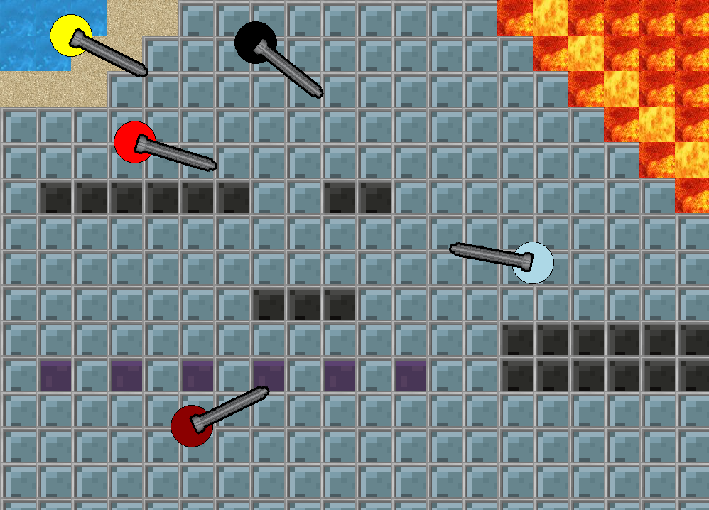
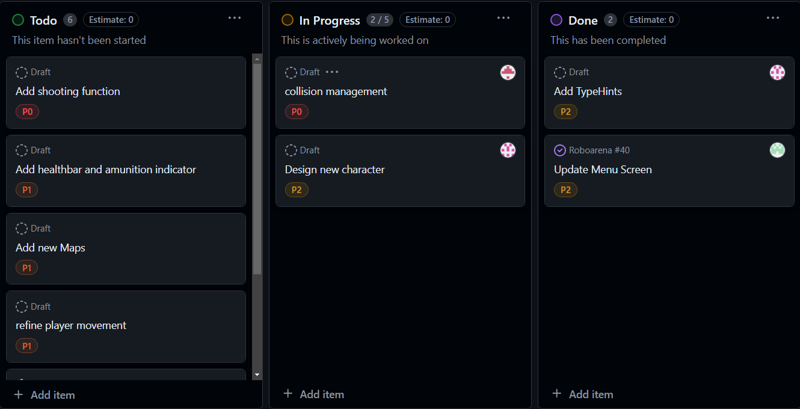
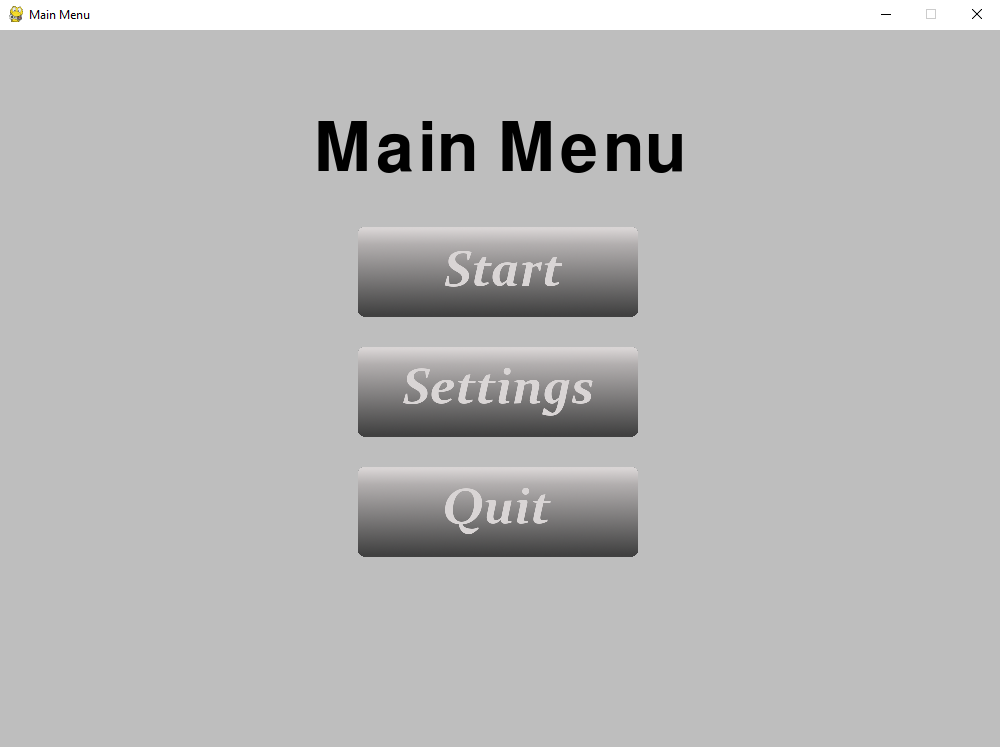
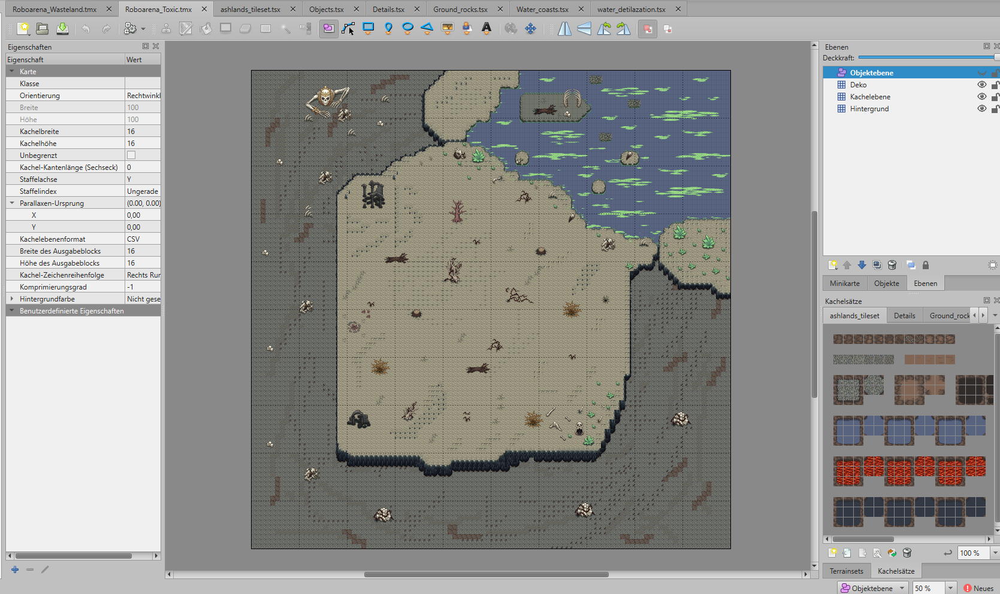
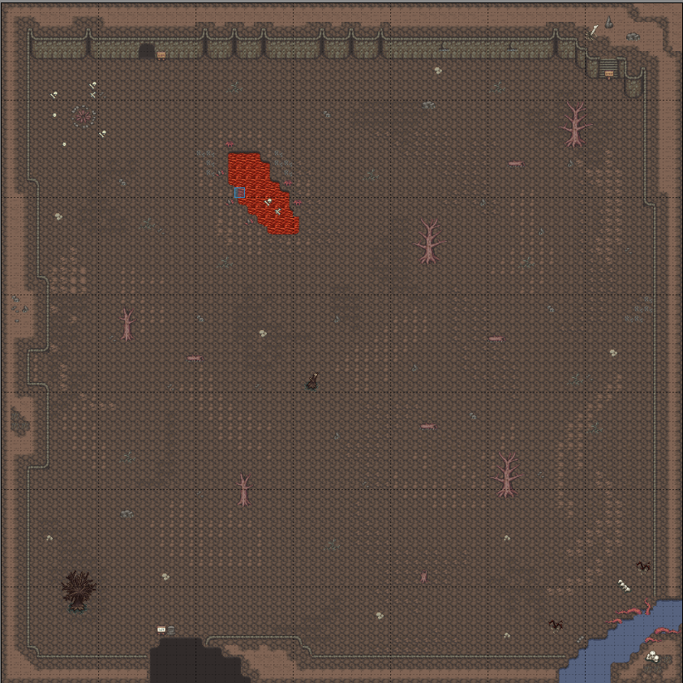
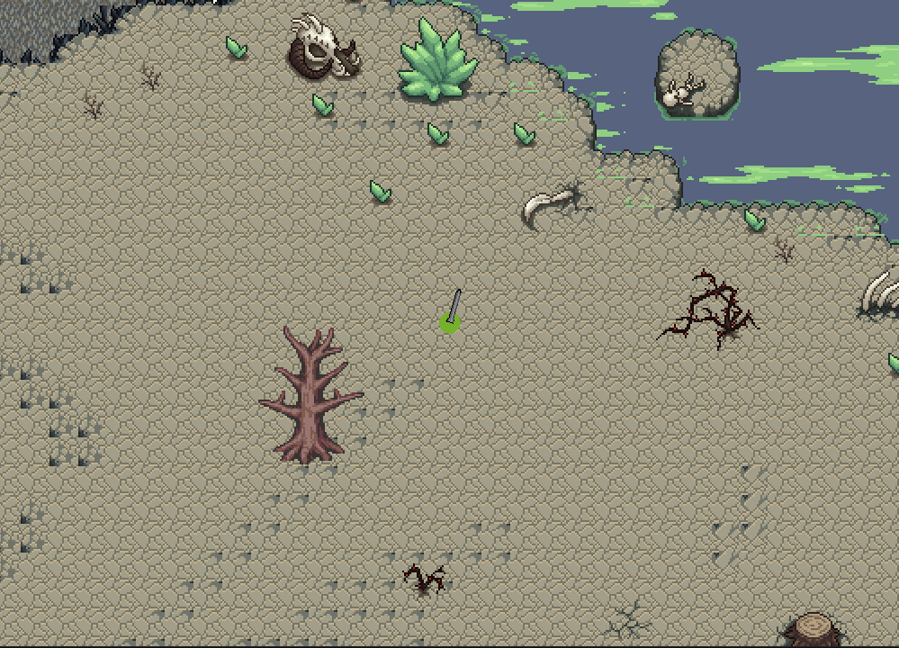
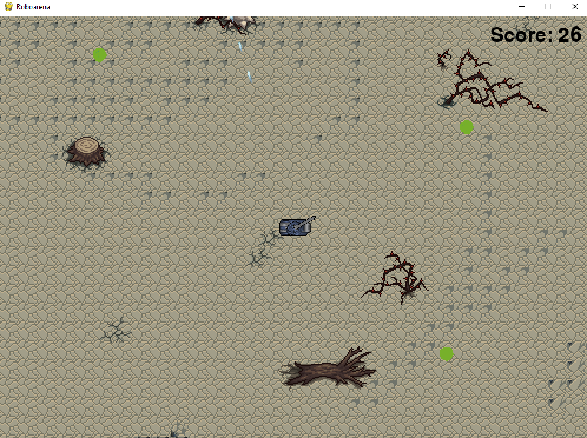

Roboarena Blog
Sprint 1 Results
The first Sprint included the basic Setup to start our Programming Journey
All group members installed Python and Pygame
We set up our Project repository and invited all members and tutors (Marco, Lukas)
We added a flake8 test as our first GitHub action (Edwin)
We created a basic pygame template to begin with (Lukas)

We added key (Marco) and mouse (Lukas) event handlers
We added a start button to switch from menu to game state (Edwin)

Sprint 2 Results
In the second Sprint we had to draft what our game could look like and start with the basic game functions
Edwin showed his idea and all group members agreed on that
We created sketches of what the game could look like (Edwin)
We created a arena class and added an arena object into our game (Edwin)
We created a BasicRobot class and added an object of this class for our first Robot (without the direction of the object beeing shown) (Lukas)
We added the movement of our first Robot object through key handlers, so you can control the robot by pressing w, a, s, d (Marco)

Sprint 3 Results
For the third Sprint our goal was to extend our robot class and to make new levels easier to add
We created levels as text files to read them from hard disc [Edwin]
We agreed on what assets to use as graphical tiles
We extended our Robot class by representing accelerations and speed and adding more Robots (foes, players) [Lukas]
We added Weapon assets to resemble first functionalities (aiming, foes targeting player) [Marco]
For our Robots assets we found a few fitting ones but didnt include them yet
To check our Code for flake8 errors we all added a flake8 extensions on our local machines
Source for Tank assets

Sprint 4 Results
For the fourth Sprint we had to start discussing our minimum viable Product for our Game
We opened a Github Project to add and assign to-do's and to get a better overview of our Project
We created an MVP.md file that contains our minimum viable Product
Edwin started working on our collision management
Marco refined our code and added TypeHints
Marco started working on Character and foe designs
Lukas created a new design for our menu
Lukas added new buttons to the menu for further use (different states)
 
Sprint 5 Results
For the fitht Sprint we wanted to make Collision of the player and the Map possible and create new Maps to add to the Game
We opened Created the Issue in our Github Project and assigned ourselves
Edwin continued working on collisions
Lukas created a new Player class to make everything sprite Classes, because Sprite Classes have some integrated functions to make things easier
Lukas finished the collision by using sprite groups and detecting any collision between the player and the collision sprites (on the map)
Marco Created 2 new maps in Tiled. With Tiled we can easily created more maps


Lukas loaded the Tiled files into our game by using pytmx.
Marco changed our "camera" movement, so that the player is always the center of the screen and the camera "follows" him on the map

Edwin created a new image for our Player Robot
Source for Toxic tileset
Source for Wasteland tileset
Sprint 6 Results
For this sprint we further worked on our to-do's of the github Projects Table
Marco completed the implementation of enemy entities
The maps now have an entity layer that contains the enemies spawnpoints
The enemies move in a semi-random manner focused towards the player
They collide with the environment and the player
The enemies image loading and animation is implemented
Lukas worked on several to-do's
He added images for the player
Cannons and bullets are now two additional sprite classes
The players movement got refined a little
The bullet class got implemented to realize shooting and it works for the player
A Score was added in the top right corner, which increases for every enemy killed
